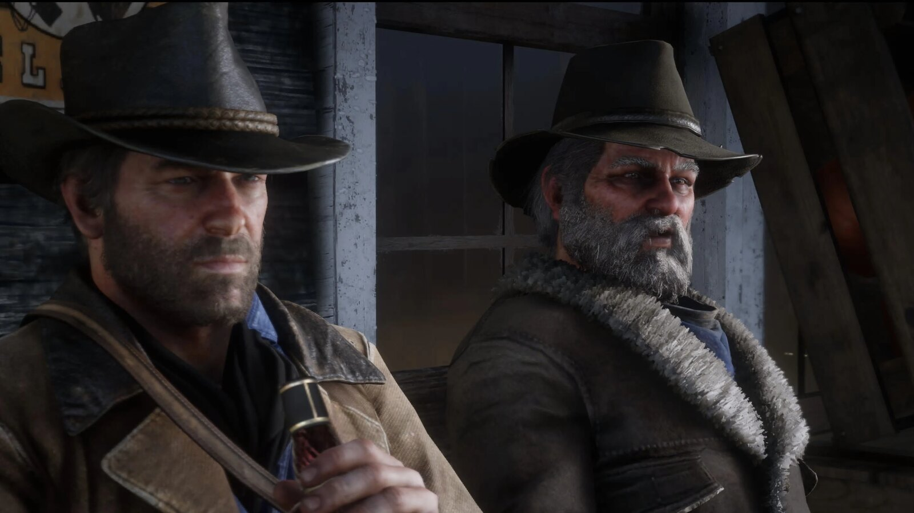
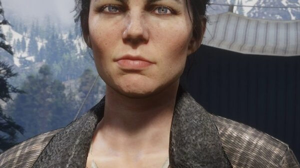
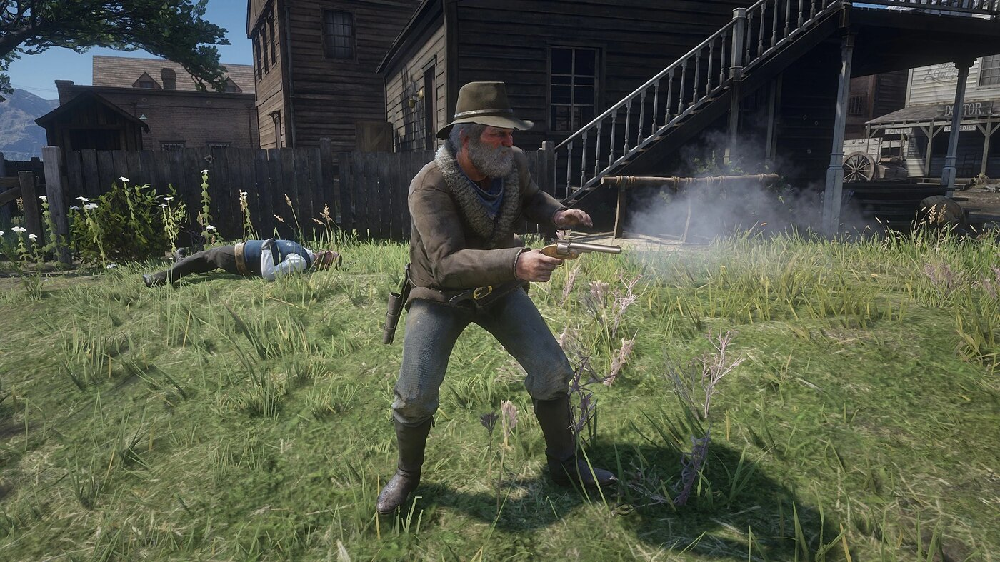

Character · Van der Linde gang
Uncle
Uncle is a lazy, hard-drinking old outlaw attached to the Van der Linde gang and later to the Marston household, a comic-relief fixture across both Red Dead Redemption games.
Famous for dodging work by blaming his "lumbago", Uncle is loyal to the family in his own way, and he dies defending it.
- Died
- 1911
- Status
- Deceased
- Nationality
- American
- Affiliation
- Van der Linde gang, Marston ranch
- Games
- Red Dead Redemption, Red Dead Redemption 2
Biography
The gang's freeloader
Uncle does as little as possible around camp, forever nursing a bottle and a bad back. Despite this, he is part of the gang's extended family and takes part in a handful of its schemes.
Beecher's Hope
After the gang falls, Uncle attaches himself to John and Abigail Marston's ranch at Beecher's Hope, helping, a little, to run it in the years that follow.
Personality
Idle, witty and self-serving, Uncle is the source of much of the gang's humour. For all his laziness, his loyalty to the family is real, and in the end he proves it.
Relationships

John Marston
The former gang member whose ranch Uncle joins, and beside whom he makes his last stand.

Abigail Marston
The woman of the Beecher's Hope household, who tolerates Uncle's idleness as part of the family.

Arthur Morgan
A gang brother from the old days, often the target and the source of Uncle's jokes.

Dutch van der Linde
The leader whose gang Uncle rode with for years before the family scattered.
Death and fate
Uncle is killed in 1911 during the government's raid on Beecher's Hope, gunned down helping John and the Marstons defend the ranch.
Behind the scenes
Uncle appears in both Red Dead Redemption (2010) and Red Dead Redemption 2 (2018), one of the few characters present across the whole saga.
Trivia
- He blames his laziness on "lumbago".
- He appears in both main Red Dead Redemption games.
- He dies defending Beecher's Hope in 1911.
Gallery
